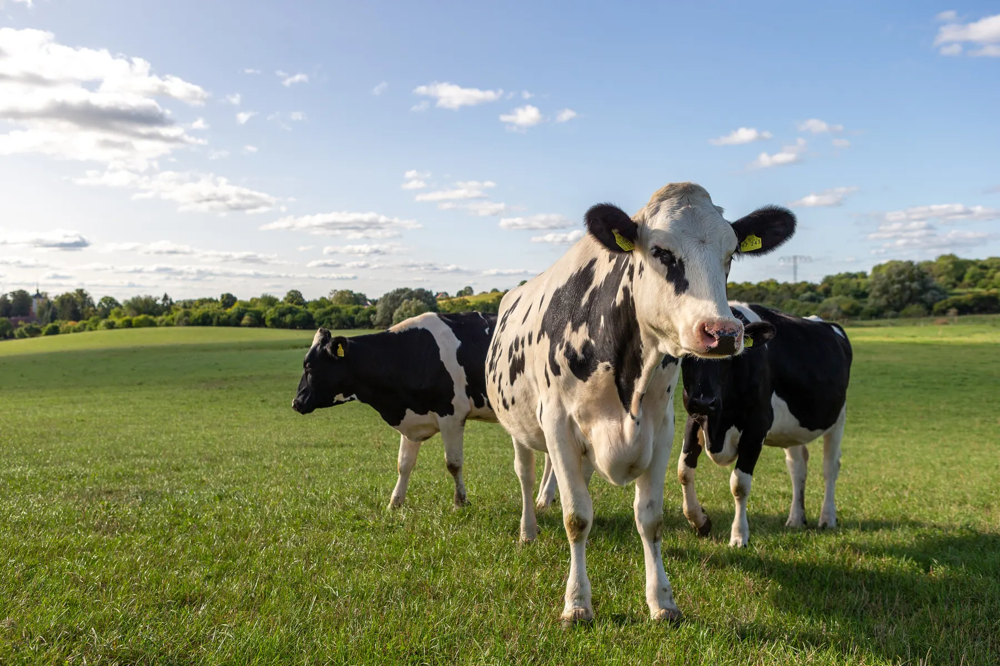
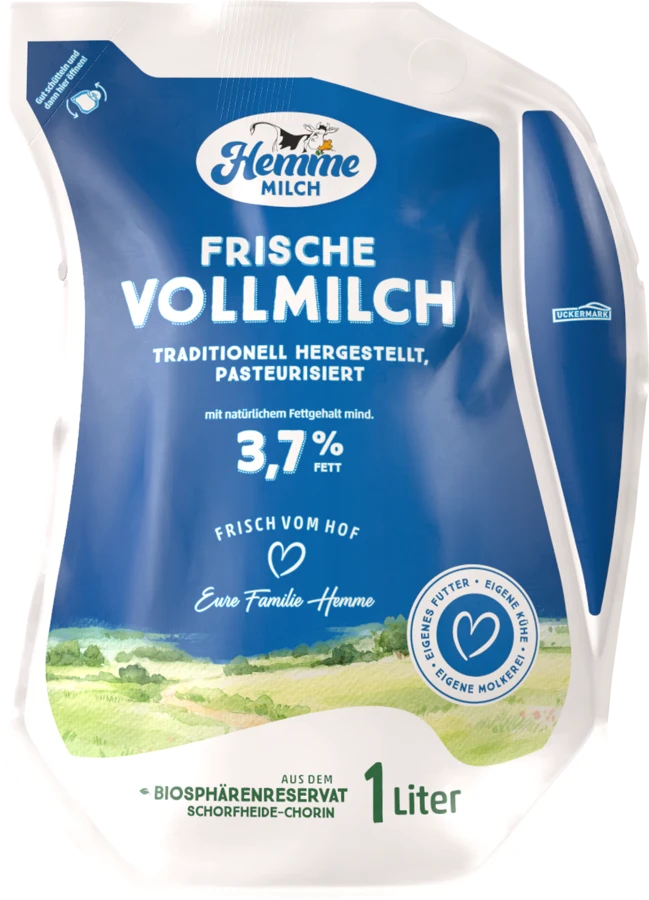

- Startseite
- Produkte
Aus unserer eigenen Molkerei
Was aus unserer Milch wird
Frische Milch, Joghurt, Butter, Milchgetränke und Quark. Alles aus unserer Molkerei in Schmargendorf, klassisch pasteurisiert und nie H‑Milch.




Auf einen Blick
- Aus der eigenen Hofmolkerei
- Milch, Joghurt, Butter, Quark
- Dazu Milchgetränke für unterwegs
- Pasteurisiert, keine H‑Milch
- Produktgruppen
- 5
- Liter Milch verarbeiten wir täglich
- 33.000
- für 15 bis 20 Sekunden, nie H‑Milch
- 75 °C
- Restlaufzeit der frischen Milch
- 10 Tage
Frische Milch
Unsere Milch ist ein reines Naturprodukt. Wir erhitzen sie traditionell und schonend: 15 bis 20 Sekunden bei etwa 75 Grad. So bleibt der volle Geschmack erhalten. Ultrahocherhitzung wie bei H‑Milch gibt es bei uns nicht.
Die Vollmilch hat mindestens 3,7 Prozent Fett, die fettarme Milch 1,8 Prozent. Beide gibt es im 1‑Liter-Beutel, die Restlaufzeit beträgt 10 Tage. Neu ist unsere laktosefreie Vollmilch mit weniger als 0,1 Gramm Laktose pro 100 Gramm. Sie ist homogenisiert und länger haltbar.
Für Cafés und Gastronomie füllen wir auch 10‑Liter-Gebinde ab, zum Beispiel für Kaffeespezialitäten.
Milchgetränke
Für Zuhause600 ml
Für unterwegs230 ml
Unsere Milchgetränke bestehen zu mindestens 92 Prozent aus frischer Vollmilch und werden im Biosphärenreservat Schorfheide-Chorin hergestellt. Vanille- und Schokomilch gibt es das ganze Jahr, Eiskaffee und Erdbeermilch im 600‑ml-Beutel von April bis Oktober.
Für unterwegs gibt es den 230‑ml-Becher: Schoko, Vanille und Eiskaffee das ganze Jahr, Erdbeermilch in der Saison. Neu dabei sind Mango Lassi und der High Protein Kaffee mit Toffee-Karamell. Schokomilch ist 12 Tage haltbar, Vanillemilch und Eiskaffee 14 Tage.
Joghurt
Naturjoghurt
Fruchtjoghurt für zwischendurch200 g
Fruchtjoghurt für die Familie400 g
Unser Fruchtjoghurt hat 83 Prozent Joghurtanteil und einen natürlichen Fettgehalt von 3,7 Prozent. Im 200‑Gramm-Becher gibt es Bircher-Müsli, Heidelbeere, Stracciatella, Erdbeere-Himbeere, Kirsche und Mango-Vanille. Im 400‑Gramm-Becher gibt es Erdbeere-Himbeere, Heidelbeere, Kirsche, Vanille und Pfirsich-Maracuja.
Der Naturjoghurt ist cremig und herrlich mild, aus Vollmilch mit 3,7 Prozent oder als fettarmer Joghurt mit 1,8 Prozent. Joghurt mild gibt es auch im großen 600‑Gramm-Beutel. Alle Joghurts haben eine Restlaufzeit von 14 Tagen.
Butter & Buttermilch
Unsere Fassbutter entsteht aus natürlich gesäuertem Rahm frischer Vollmilch. So bleiben der besondere Geschmack und das vollsahnige Aroma erhalten, ideal für Gebäck. Es gibt sie im 200‑Gramm-Stück und für Bäckereien und Gastronomie im 12‑Kilogramm-Block.
Die Buttermilch stellen wir traditionell in ihrer ursprünglichsten Form aus dem reinen, frischen Butterkorn her. Sie hat höchstens 1 Prozent Fett und einen frischen, leicht säuerlichen Geschmack.
Quark
Unser Magerquark ist von Natur aus reich an Protein und kommt im 250‑Gramm-Becher. Zum Brot oder zu Kartoffeln gibt es Kräuterquark im 200‑Gramm-Becher. Für Gastronomie gibt es außerdem Speisequark mit 40 Prozent Fett i. Tr.
Der Hemme Milch-Beutel
- 14 g
Leicht
Halb so schwer wie vergleichbare Einwegverpackungen. Das spart Energie, Wasser und Emissionen bei Herstellung und Transport.
- 35 %
Kreide im Material
Der Kreideanteil spart Kunststoff und macht den Beutel standfest. Der Geschmack der Milch bleibt unverändert.
- 66 %
Weniger Abfall
Leer ist der Beutel so dünn wie ein Blatt Papier und braucht kaum Platz im Müll.
Ihr reißt ihn ohne Schere auf, haltet ihn am luftgefüllten Griff, gießt bequem und bekommt ihn restlos leer. Warm machen geht direkt im Beutel, er ist mikrowellengeeignet. Den Beutel haben wir uns bewusst ausgesucht. Er kommt von einem innovativen Verpackungshersteller aus Schweden. Entsorgt wird er über das Duale System.
Für Gastronomie und Großverbraucher
Für Großverbraucher füllen wir eigene Gebinde ab, vom 5‑Kilogramm-Eimer Joghurt und Quark bis zum 12‑Kilogramm-Block Fassbutter. Alles zum Milchmann-Service steht unter Für Gastro & Handel.
12kg+4,5kg
Fassbutter
Aus natürlich gesäuertem Rahm, mit vollsahnigem Aroma. Für Bäckereien und Gastronomie.
10Liter
Milch im Schlauchbeutel
Frische Milch mit 3,7 % Fett für Kaffeespezialitäten in Cafés und Gastronomie.
5kg
Im Eimer
Für Küche, Backstube, Café und Frühstücksbuffet.
- Sahne
- Naturjoghurt3,7 % Fett
- Fruchtjoghurt
- Speisequark
1Liter
Frische Milch
- Vollmilch3,7 % Fett
- Fettarme Milch1,8 % Fett
- Laktosefreie Vollmilch3,7 % Fett
600ml / g
Im Beutel
- Schoko- und Vanillemilchdas ganze Jahr
- Eiskaffee und ErdbeermilchApril bis Oktober
- Buttermilch600 g
- Joghurt mild600 g
250g
Speisequark
Mit 40 % Fett i. Tr., für Küche, Backstube und Frühstücksbuffet.
230ml
Milchgetränke to go
- Schoko, Vanille, Eiskaffeedas ganze Jahr
- ErdbeermilchApril bis Oktober
- High Protein Kaffee, Mango Lassineu im Sortiment
Fragen zu unseren Produkten
Eure Frage ist nicht dabei? Ruft uns an oder schreibt uns.
Ist Hemme Milch H‑Milch?
Nein. Unsere Milch ist klassisch pasteurisiert, also 15 bis 20 Sekunden auf etwa 75 Grad erhitzt. Ultrahocherhitzung wie bei H‑Milch gibt es bei uns nicht.
Wie lange ist die Milch haltbar?
Die frische Milch im Beutel hat eine Restlaufzeit von 10 Tagen. Joghurt, Fassbutter, Buttermilch, Vanillemilch und Eiskaffee haben 14 Tage, Schokomilch 12 Tage.
Kann ich den Milchbeutel in die Mikrowelle stellen?
Ja. Ihr könnt die Milch direkt im Beutel warm machen, er ist mikrowellengeeignet.
Woraus besteht der Fruchtjoghurt?
Unser Fruchtjoghurt hat einen Joghurtanteil von 83 Prozent und einen natürlichen Fettgehalt von 3,7 Prozent. Für einen 400‑Gramm-Becher Joghurt braucht es 400 Gramm Milch.
Gibt es Hemme Milch auch in großen Gebinden?
Ja. Für Gastronomie und Großverbraucher gibt es frische Milch im 10‑Liter-Schlauchbeutel, Fassbutter im 12‑Kilogramm-Block und Speisequark mit 40 Prozent Fett i. Tr. Mehr dazu unter Für Gastro & Handel.
Wo gibt es Hemme Milch?
In Berlin und Brandenburg bei EDEKA, REWE, Kaufland, Netto und vielen kleinen Läden, in Mecklenburg-Vorpommern, Thüringen und Sachsen bei ausgewählten Händlern, dazu im Milchladen auf dem Hof.